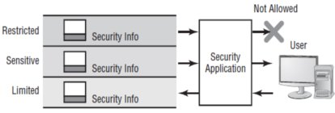
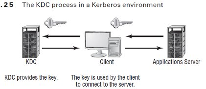

- + -
Attacks
- + -
Access Attack types
- + -
Dumpster diving
- Dumpster or recycle bin may contain paper which have sensitive information
- + -
Eavesdropping
process of listening in on or overhearing parts of a conversation, including listening in on your network traffic.
- + -
Snooping
- looking through your files hoping to find something interesting.
- + -
Interception
passive interception would involve someone who routinely monitors network traffic.
Active interception - putting a computer system between the sender and receiver to capture information as it’s sent.
- + -
Dumpster diving
- + -
Recognizing Modification and Repudiation Attacks
Modification :involve the deletion, insertion, or alteration of information in an unauthorized manner that is intended to appear genuine to the user.
Repudiation attacks make data or information appear to be invalid or misleading (which can be even worse).
- + -
Denial-of-service (DoS)
- prevent access to resources by users authorized to use those resources.
- + -
2 major forms
- flaw exploitation
- traffic generation.
- + -
distributed denial-of-service (DDoS)
amplifies the concepts of a DoS by using multiple computer systems to conduct the attack against a single organization.
These attacks exploit the inherent weaknesses of dedicated networks such as DSL and cable.
- + -
Common Attacks
- + -
Back Door
originally refers to troubleshooting and developer hooks into systems.
gaining access to a network and
inserting a program or utility that
creates an entrance for an attacker.
The program may allow a certain user ID to log on without a password or gain administrative privileges.
- Spoofing or fooling
- an attempt by someone or something to masquerade as someone else.
- + -
popular e.g.
- IP spoofing
- DNS spoofing.
- + -
Man-in-the-Middle
places a piece of software between a server and the user that neither the server administrators nor the user is aware of.
The software intercepts data and then sends the information to the server as if nothing is wrong.
The server responds back to the software, thinking it’s communicating with the legitimate client. The attacking software continues sending information on to the server, and so forth.
- + -
Replay
- information is captured over a network.
- + -
Password-Guessing
Brute-force attack A brute-force attack is an attempt to guess passwords until a successful guess occurs. This type of attack usually occurs over a long period.
Dictionary attack A dictionary attack uses a dictionary of common words to attempt to find the user’s password.
- + -
Privilege Escalation
- similar to cheat codes in games so as to have higher permission levels
- + -
Back Door
- + -
TCP IP related
- + -
Sniffing the Network
- A network sniffer, or scanner, is a device that captures and displays network traffic.
- Most NICs can be placed in promiscuous mode,
- which allows the NIC to capture all information that it sees on the network.
- + -
Scanning Ports
- systematically query your network to determine which services and ports are open.
- it is part of fingerprinting a network
- Many routers, unless configured appropriately, will let all protocols pass through them.
- + -
TCP SYN flood or TCP ACK attack
purpose is to deny service.
the client continually sends and receives the ACK packets but doesn’t open the session.
The server holds these sessions open, awaiting the final packet in the sequence. This causes the server to fill up the available sessions and deny other clients the ability to access the resources.
- + -
TCP Sequence Number Attack
when an attacker takes control of one end of a TCP session.
the attacker intercepts and then responds with a sequence number similar to the one used in the original session.
either disrupt or hijack a valid session.
- + -
TCP/IP hijacking or active sniffing
- + -
involves
- gaining access to host machine
- logically disconnecting it to network.
- attacker immediately insert another m/c with same IP
- + -
involves
- + -
Sniffing the Network
- + -
UDP Related
- + -
UDP flooding
- overloads services, networks, and servers.
- + -
UDP flooding
- + -
ICMP Attacks
- Smurf Attacks
uses IP spoofing and broadcasting to send a ping to a group of hosts in a network.
An ICMP ping request (type 8) is answered with an ICMP ping reply (type 0) if the targeted system is up, otherwise an unreachable message is returned.
If a broadcast is sent to a network, all of the hosts will answer back to the ping.
The result is an overload of the network and the target system.
- ICMP Tunneling
- Smurf Attacks
- + -
Access Attack types
- + -
TCP/IP Security
+ - Application layer
- + -
widely used protocols
- Http
- FTP
- SMTP
- Telnet -interactive terminal emulation protocol
- + -
Domain Name Service-(DNS)
- reolve hotst name to an ip address.
- + -
Routing Information Protocol (RIP).
- allows routing information to be exchanged between routers on an IP network.
- + -
Simple Network Management Protocol (SNMP).
- is a management tool
- allows communications between network devices and a management console.
- Most routers, bridges, and intelligent hubs can communicate using SNMP.
- + -
Post Office Protocol (POP)
- used in many e‑mail systems.
- allows for advanced features and is a standard interface in many e‑mail servers.
- is used for receiving e‑mail.
Host-to-Host or Transport Layer
- + -
TCP
- provides a reliable one-to-one, connection-oriented session
- + -
UDP
- unreliable connectionless communication
+ - Internet layer
- + -
standard protocols
- + -
Internet Protocol (IP)
- routable protocol
- responsible for IP addressing.
- fragments and reassembles message packets
- + -
Address Resolution Protocol (ARP)
- resolves IP addresses to Network Interface layer addresses
- resolve an IP address to a Media Access Control (MAC) address.
- + -
Internet Control Message Protocol (ICMP)
- maintenance and reporting functions.
- It’s used by the Ping program
- + -
Internet Group Management Protocol (IGMP)
- manages IP multicast groups
- + -
Internet Protocol (IP)
+ - Network Interface Layer
- lowest level of the TCP/IP suite
- responsible for placing and removing packets
- + -
widely used protocols
- + -
Software Exploitation
- + -
Database exploitation
- If a client session can be hijacked or spoofed, the
- attacker can formulate queries against the database that disclose unauthorized information.
- + -
Application exploitation
- Some VB script's and Excel Macros could perform bad task.
- + -
E-mail exploitation
- result of a weakness in many common e-mail clients
- + -
Spyware
it works—often actively—on behalf of a third party.
doesnt self replicate.
spread to machines by users who inadvertently ask for it unknowing.
that it almost always exists to provide commercial gain.
monitors the user’s activity and responds by offering unsolicited pop-up advertisements (sometimes known as adware),
- + -
Rootkits
programs that have the ability to hide certain things from the OS.
mask presence of processes running on a system so that it do not show up in Task Manager or connections established or available that do not appear in a netstat display
achievce above func. by manipulating function calls to the operating system and filtering out information that would normally appear.
- + -
Database exploitation
- + -
V i r u s e s
- + -
definition
- is a piece of software designed to infect a computer system.
- may also damage the data on your hard disk,
- destroy your operating system, and possibly spread to other systems.
- + -
how they work
- If your system is infected, the virus may try to attach itself to every file in your system
- and spread each time you send a file or document to other users
- + -
T Y P E S
- + -
Armored Virus
designed to make itself difficult to detect or analyze
the more time it takes to deconstruct the virus, the longer it can live. The longer it can live, the more time it has to replicate and spread to as many machines as possible.
- + -
Companion Virus
attaches itself to legitimate programs and then creates a program with a different filename extension.
- + -
Macro Virus
exploits the enhancements made to many application programs
Word, for example, supports a mini-BASIC programming language that allows files to be manipulated automatically. These programs in the document are called macros.
fastest growing exploitation today.
- + -
Multipartite Virus
attacks your system in multiple ways
It may attempt to infect your boot sector, infect all of your executable files, and destroy your application files
- + -
Phage Virus
- modifies and alters other programs and databases
- + -
Polymorphic Virus
change form in order to avoid detection
These types of viruses attack your system, display a message on your computer, and delete files on your system.
Frequently, the virus will encrypt parts of itself to avoid detection, this process is referred to as mutation
- + -
Retrovirus
- attacks or bypasses the antivirus software installed on a computer.
- an anti-antivirus
- + -
stealth virus
- attempts to avoid detection by masking itself from applications.
- may attach itself to the boot sector of the hard drive.
- + -
Armored Virus
- + -
definition
- + -
Trojan horses
- + -
Def:
- programs that enter a system or network under the guise of another program
- may be included as an attachment
- or as part of an installation program
- + -
can do
- create a back door
- or replace a valid program during installation
- then accomplish its mission under the guise of another program
- + -
Def:
- + -
Logic Bombs
programs or snippets of code that execute when a certain predefined event occurs.
bomb may send a note to an attacker when a user is logged on to the Internet and is using a word processor.
- + -
Worms
- + -
different from a virus
- in that it can reproduce itself,
- it’s self-contained, and
- it doesn’t need a host application to be transported
- However, it’s possible for a worm to contain or deliver a virus to a target system.
- + -
different from a virus
- + -
Phishing
form of social engineering in which you simply ask someone for a piece of information that you are missing by making it look as if it is a legitimate request.
- + -
Network Operations Center (NOC)
- single area for network monitoring and administrative control of systems.
- + -
Diff. Net. Infra. Dev.
- + -
Firewalls
- + -
Def:
- are one of the first lines of defense in a network
- can be either stand-alone systems or included in other devices such as routers or servers.
- + -
purpose
- basically : isolate one network from another
- + -
Packet filter
- passes or blocks traffic to specific addresses based on the type of application
- doesn’t analyze the data of a packet
- decides whether to pass it based on the packet’s addressing information
- e.g: may allow web traffic on port 80 and block Telnet traffic on port 23.
- can also specify which IP addresses can request which ports and allow or deny.
- no intelligence
- + -
Proxy firewall
- used to process requests from an outside network
- examines the data and makes rule-based decisions
- intercepts all the packages and reprocesses them for use internally.
- provides better security than packet filtering
- can also offer caching
- + -
typically uses two network interface cards (NICs).
- referred to as a dual-homed firewall
- One of the cards is connected to the outside network,
- and the other is connected to the internal network.
- + -
Stateful inspection firewall
- also referred to as stateful packet filtering
- records are kept using a state table that tracks every communications channel
- Stateful inspections occur at all levels of the network
- has intelligence as keeps track of comm. channel.
- + -
Def:
- + -
Hubs
- is nothing more than a device allowing
- many hosts to communicate with each other through the use of physical ports.
- expensive hubs do allow you to enable port security
- unsecure LAN devices that should be replaced with switches for security and increased throughput.
- + -
Modem
connects the digital signals from a computer to an analog telephone line.
amalgam of the words modulator and demodulator,
Most modems answer any call made to them when connected to an outside line.
Afer that, it generally synchronizes with a caller’s modem and makes a connection
when improperly connected to a network, can allow instant unsecured access to the system’s or network’s data and resources.
you must eliminate as many features of the modem as possible in order to increase security.
- + -
Remote Access Services (RAS)
- any server service that offers the ability to connect remote systems.
- + -
Routers
- primary instrument used for connectivity between two or more networks
- intelligent devices
- they store information about the networks
- can be configured to operate as packet-filtering firewalls
- can also be connected internally to other routers, creating zones that operate autonomously.
- Because broadcasts don’t traverse routers, network segmentation decreases traffic.
- + -
communication Protocols
- + -
Routing information Protocol (RIP)
- routinely broadcast the status and routing information of known routers.
- find routes between systems using the smallest number of hops or connections.
- + -
Border Gateway Protocol (BGP)
- allows groups of routers to share routing information.
- + -
Open Shortest Path First (OSPF)
- allows routing information to be updated faster than with RIP.
- + -
Routing information Protocol (RIP)
- + -
Switches
- multiport devices that improve network efficiency
- typically has a small amount of information about systems in a network.
- + -
Telecom/PBX Systems
+ - private branch exchange (PBX)
- allow users to connect voice, data, pagers, networks, and almost any
- other conceivable application into a single telecommunications system.
developing in a way where all communications occur via data links to phone companies using standard data transmission technologies, such as T1 or T3.
+ - fig.
- + -
Virtual Private Networks (VPN)
- private network connection that occurs through a public network.
- can be used to connect LANs together across the Internet or other public networks
- requires either special hardware or a VPN software package running.
- use a tunneling protocol such as L2TP, IPSec, or PPTP.Note: IPSec is more secure than PPTP
- + -
Wireless Access Points
- is a low-power transmitter/receiver, also known as a transceiver,
- devices communicate each other via several communication protocol including IEEE 802.11
- they use portion of the radio frequency (RF) spectrum called microwave.
- also offers mobile connectivity within an area.
- + -
- + -
Understanding Mobile Devices
these devices use either RF signaling or cellular technologies for communication
if device uses the Wireless Application Protocol (WAP), the device in all likelihood doesn’t have security enabled.
+ - Level of Security.
- + -
Anonymous authentication
- allows virtually anyone to connect to the wireless portal
- + -
Server authentication
- requires the workstation to authenticate against the server
- + -
Two-way (client and server) authentication
- requires both ends of the connection (client and server) to authenticate to confirm validity
+ - protocols
- + -
The Wireless Session Protocol (WSP)
- manages the session information and
- connection between the devices.
- + -
Wireless Transaction Protocol (WTP)
- provides services similar to TCP and UDP for WAP
- + -
Wireless Datagram Protocol (WDP)
- provides the common interface between devices.
- + -
Wireless Transport Layer Security (WTLS)
- the security layer of the WAP
- + -
Anonymous authentication
- + -
Point-to-Point Protocol
- introduced in 1994
- offers support for multiple protocols including AppleTalk, IPX, and DECnet. PPP
- + -
works with
- POTS
- Integrated Services Digital Network (ISDN),
- and other faster connections such as T1.
- encapsulating the network traffic in a protocol called Network Control Protocol (NCP).
- Authentication is handled by Link Control Protocol (LCP).
- doesn’t provide data security,
- but it does provide authentication using Challenge Handshake Authentication Protocol (CHAP).
- + -
for Security
A dial-up connection using PPP works well because it isn’t common for an attacker to tap a phone line.
- + -
Tunneling Protocols
- + -
add ability to create tunnels between networks that can be more secure
support additional protocols
and provide virtual paths between systems.
basically imagine sensitive data being encapsulated in other packets that are sent across the public network
- common protocols
- + -
Point-to-Point Tunneling Protocol (PPTP)
- supports encapsulation in a single point-to-point environment.
- encapsulates and encrypts PPP packets.
- port 1723 and TCP for connections
- The negotiation between the two ends of a PPTP connection is done in the clear.
- + -
Layer 2 Forwarding (L2F)
- created by Cisco
- method of creating tunnels primarily for dial-up connections
- provides authentication but it doesn’t provide encryption.
- uses port 1701 and TCP
- + -
Layer 2 Tunneling Protocol (L2TP)
- is a hybrid of PPTP and L2F
- primarily a point-to-point protocol
- doesn’t provide data security:
- information isn’t encrypted
- Security can be provided by protocols such as IPSec
- uses port 1701 and UDP for connections.
- + -
Secure Shell (SSH)
- originally designed for Unix systems
- uses encryption to establish a secure connection
- ses port 22 and TCP
- + -
Point-to-Point Tunneling Protocol (PPTP)
- + -
Internet Protocol Security (IPSec)
- isn’t a tunneling protocol
- used in conjunction with tunneling protocols.
- oriented primarily toward LAN-to- LAN connections,
- can also be used with dial-up connections.
- provides secure authentication and encryption of data and headers
- + -
- 802.1x Wireless Protocols
- represent a broad range of wireless protocols for wireless communications.
- + -
RADIUS
Remote Authentication Dial-In User Service
allows authentication of dial-in and other network connections
is an IETF standard,
A RADIUS server can be managed centrally
+ - FIg.
should be used to improve network security when implementing a single service to authenticate users who connect remotely
- + -
TACACS
Terminal Access Controller Access Control System
is a client-server-oriented environment,
operates in a manner similar to RADIUS
Extended TACACS (XTACACS) replaced the original and combined authentication and authorization with logging to enable auditing.
+ - TACACS/+ is most current Avatar
- allows credentials to be accepted from multiple methods
- widely accepted as an alternative to RADIUS
- + -
Working with E-Mail
- + -
common protocols used
- + -
Simple Mail Transport Protocol (SMTP)
- used to send e-mail between an e-mail client and an e-mail server as well as between e-mail servers.
- SMTP uses port 25 and TCP
- Each e-mail message can take a different path from the client to the server
- + -
Post Office Protocol (POP)
- newer protocol that relies on SMTP for message transfer to receive e-mail.
- provides a message store that can be used to store and forward messages.
- + -
POP3, the newest version of POP
- allows messages to be transferred from the waiting post office to the e-mail client
- uses port 109 for POP2 and 110 for POP3 & TCP
- + -
Internet Message Access Protocol (IMAP)
- newest, rapidly becoming the most popular
- has a store-and-forward capability.
- allows messages to be stored on an e-mail server instead of being downloaded to the client.
- allows messages to be downloaded based on search criteria.
- Many IMAP implementations also allow connections using web browsers.
- current version (IMAP 4) uses port 143 and TCP
- + -
Simple Mail Transport Protocol (SMTP)
- + -
fig.
- + -
common protocols used
- + -
Vulnerabilities of Web Add-ins
- + -
ActiveX
- components are downloaded to the client hard disk
- potentially allowing additional security breaches.
- + -
Buffer Overflows
occur when an application receives more data than it’s programmed to accept.
can cause an application to terminate or to write data beyond the end of the allocated space.
Termination may leave the system sending the data with temporary access to privileged levels in the attacked system
while overwriting can cause important data to be lost.
a result of a programming error.
- + -
Common Gateway Interface
- older form of scripting
- were used to capture data from a user using simple forms
- Vulnerabilities is its inherent ability to do what it is told. i.e. execute everything
- + -
SMTP Relay
- allows e-mail servers to forward e-mail to other e-mail servers (open relay))
- Initially, was intended to help bridge traffic between systems.
- Unfortunately, this feature has been used to generate a great deal of spam on the Internet.
- + -
recommendations
- browsers be configured so that they do not allow ActiveX to run without prompting the user
- do not run applications written in CGI
- do not allow cookies to be accepted
- SMTP relaying should be disabled
- + -
ActiveX
- + -
FTP’s Vulnerability
- The user ID and password aren’t encrypted and are subject to packet capture
- + -
Understanding Network Protocols
- + -
major TCP/IP protocols
- + -
SNMP
- to manage and monitor devices in a network.
- Many copiers, fax machines, and other smart office machines use SNMP for maintenance.
- travels through routers quite well and can be vulnerable to attack.
- upgraded as a standard to SNMPv2
- latest is SNMPv3
- + -
ICMP
- Internet Control Message Protocol
- report errors and reply to requests from programs such as Ping and Traceroute
- favorite protocols used for DoS attacks
- Many businesses have disabled ICMP through the router to prevent these types of situations.
- + -
IGMP
- Internet Group Management Protocol
- manage group or multicasting sessions
- can be used to address multiple recipients of a data packet:
- broadcast can create DOS attack , so disable it.
- + -
SNMP
- + -
major TCP/IP protocols
- + -
Cabling, Wires, and Comm. Basics
- + -
Coax
- Coaxial cable
- + -
fig.
- one of the oldest media
- center conductor or core that is used to carry data
- not used anymore.
- expensive per foot when compared to UTP cable
- + -
vulnerability
- addition of a T-connector attached to a network sniffer
- + -
vampire tap.
connection hooks directly into a coax by piercing the outer sheath and attaching a small wire to the center conductor or core.
- + -
fig.
- + -
UTP & STP
- Unshielded and Shielded twisted pair
- UTP & STP cabling are similar in function, with the exception that STP wraps a shield,
- UTP is by far the most popular cabling in use
- + -
fig.
- + -
Specification
- The limit of a cable segment length of twisted pair for use with Ethernet is 100 meters;
- used primarily for internal wiring
- + -
Fiber Optic
- fiber-optic cabling uses light in place of an electrical signal,
- is relatively secure because it can’t be tapped easily.
- greatest security weakness is at the connections to the fiber-optic transceivers
- very expensive so less used.
- + -
Infrared
- uses a type of radiation for communications
- allows a P2P connection between 2 IR transceiver-equipped devices.
- tend to be slow and are used for limited amounts of data
- can be bounced off windows and mirrors, as can other radiation
- + -
Radio Frequencies
- use antennas to send signals across the airwaves.
- signals can be easily intercepted.
- Anyone can connect a shortwave receiver to the sound card of a PC to
- intercept, receive, and record shortwave and higher-frequency transmissions
- + -
Microwave
use the RF spectrum
includes many types of communications
Common app. include cellular phones, police and aircraft comm, fax, and broadband telecom systems.
has the ability to carry enormous amounts of data, communicate line of sight, and use broad power ranges.
Communications on a cell network can be intercepted using off-the-shelf equipment.
wireless network using microcave operate in the 2.5 to 5.0GHz spectrum
- + -
Coax
- + -
WTLS
- Wireless Transport Layer Security
- security layer of the Wireless Application Protocol (WAP)
- provides authentication, encryption, & data integrity for wireless devices
- + -
fig.
- + -
WAP
- Wireless Application Protocol
- similar to TCP/IP but for wireless
- use WML similar to HTML & WMLScript for scripting support.
- WAP systems communicate using a WAP gateway system
- + -
fig.
- + -
WEP
- Wired Equivalent Privacy
- encrypts data to provide data security.
- weaknesses
- the way the encryption algorithms are employed
- algorithm to potentially be cracked in as few as five minutes
- Temporal Key Integrity Protocol (TKIP) can be used to make it stronger
- Wired Equivalent Privacy
- + -
Microsoft Protocols
- + -
NetBIOS
Network Basic Input Output System
provides a 15-character naming convention for resources on the network
broadcast-oriented
can be transported over NetBEUI, TCP/IP, or IPX/SPX
biggest vulnerability -- opens ports (can include 135 through 139 and 445) for file and print sharing. These ports can be accessed across the Internet
- + -
NetBEUI
- NetBIOS Extended User Interface
- used to transport NetBIOS traffic in a LAN
- nonroutable protocol, meaning that it can’t be sent across routers
- easy to intercept internally using a network sniffer
- + -
WINS Service
- Windows Internet Naming Service
- translates NetBIOS names to TCP/IP addresses
- LMHOSTS file can be used to resolve NetBIOS names to TCP/IP addresses in absence of WINS
- + -
fig
- + -
NetBIOS
- + -
NFS
- Network File System
- default file-sharing protocol for Unix systems.
- allows a remote user to mount drives on a machine in the network
- + -
(IDS)
- + -
def.
- Intrusion detection System
- + -
KEY TERMS
- + -
Activity
- is an element of a data source that is of interest to the operator.
- e.g. TCP connection request occuring repeatedly from the same IP address.
- + -
Administrator
- person responsible for setting the security policy
- decides about the deployment and config of the IDS.
- decisions regarding alarm levels, historical logging, and session monitoring capabilities
- determine the appropriate responses to attacks and
- ensuring that those responses are carried out
- + -
Alert
- message from the analyzer indicating that an event of interest has occurred
- e.g. Alert can be generated when an excessive amount of ICMP traffic is occurring
- + -
Analyzer
- component or process that analyzes the data collected by the sensor.
- looks for suspicious activity among all the data collected
- can use a rule-based process that is established when the IDS is configured.
- work by monitoring events and determining whether unusual activities are occurring
- + -
Data source
- raw information that the IDS uses to detect suspicious activity.
- may include audit files, system logs, or the network traffic
- + -
Event
- an occurrence in a data source that indicates that a suspicious activity has occurred
- may generate an alert.
- logged for future reference
- + -
Manager
- component or process the operator uses to manage the IDS.
- IDS console is a manager
- + -
Notification
- process or method by which the IDS manager makes the operator aware of an alert.
- e.g. e‑mail sent to the network’s administrative staff.
- + -
Operator
- person primarily responsible for the IDS.
- + -
Sensor
- component that collects data from the data source and
- passes it to the analyzer for analysis.
- + -
Activity
- + -
fig.
-
- + -
2 approaches
- + -
Signature-based-detection IDS
- also known as misusedetection IDS (MD-IDS)
- evaluating attacks based on attack signatures and audit trails.
- + -
fig.
- + -
Anomaly-detection IDS
- anomaly-detection IDS (AD-IDS)
- looks for things outside of the ordinary
- a training program learns what the normal operation is and then can spot deviations from it
- frequently uses artificial intelligence
- + -
fig.
-
- + -
Signature-based-detection IDS
- + -
Network-Based IDS
- IDS attaches the system to a point in the network
- where it can monitor and report on all network traffic.
- can be in front of or behind the firewall,
- + -
fig.
- + -
2 basic types of resp.
- + -
passive
- most common type of response to many intrusions
- least costly and the easiest to put into practice.
- + -
Logging
- recording that an event has occurred and under what circumstances it occurred.
- this info can be used to counter attack
- + -
Notification
- communicates event-related info to the appropriate personnel it has occurred.
- + -
Shunning
- ignoring an attack
- e.g. if an IIS server type attack is applied on apache server
- + -
active
- involves taking an action based on an attack or threat
- e.g. Terminating processes or sessions If a flood attack is detected
- + -
Deception
- fools the attacker into thinking the attack is succeeding
- while the system monitors the activity and
- potentially redirects the attacker to a system that is designed to be broken.
- This process is referred to as sending them to the honeypot,
- + -
passive
- + -
Host-Based IDS
- designed to run as software on a host computer system
- are popular on servers that use encrypted channels or channels to other servers
- + -
fig.
- + -
NIPS
- Network Intrusion Prevention Systems (NIPSs)
- focus on signature matches and then take a course of action.
- must be able to detect the attack occurring,
- NIPS is a subset of NIDS
- + -
Log Files in linux
- /var/log/faillog
- /var/log/lastlog
- /var/log/messages
- /var/log/wtmp
- + -
def.
- + -
Honeypots || tar pit
- is a computer that has been designated as a target for computer attacks
- purpose is to allow itself to succumb to an attack.
- system can be used to gain information about how the attack developed and
- what methods were used to institute the attack.


- + -
Penetration testing
- trying to get access to your system from an attacker’s perspective
- + -
security baseline
- defines the level of security that will be implemented and maintained.
- ~ www.commoncriteriaportal.org.
- Evaluation Assurance Levels EAL1-EAL7
- + -
3 primary network protocols
- + -
NetBIOS Extended User Interface (NetBEUI)
- proprietary protocol developed by Microsoft for Windows networks.
- makes it almost invulnerable to outside attack.
- because NetBEUI isn’t routable
- is less efficient for larger networks
- Transmission Control Protocol/Internet Protocol (TCP/IP)
- Internetwork Packet Exchange/Sequenced Packet Exchange (IPX/SPX)
- + -
NetBIOS Extended User Interface (NetBEUI)
- + -
Network Binding
- process of tying a network protocol to another network protocol or
- to a network interface card (NIC).
- + -
security zone
- area in a building where access is individually monitored and controlled.
- + -
Partitioning
- a network is functionally the same as partitioning a building
- + -
fig.
-
- + -
Biometrics
- use some kind of unique biological trait
- such as fingerprints, patterns on the retina, and handprints
- devices- hand scanners, retinal scanners, and, potentially, DNA scanners,
- + -
Securing Your Wireless Devices
- + -
implement a wireless security protocol
-
such as Wireless Transport Layer Security [WTLS] or
Elliptic Curve Cryptography [ECC])
-
- + -
implement a wireless security protocol
- + -
Humidity control prevents the buildup of static electricity in the environment
If the humidity drops much below 50 percent, electronic components are extremely vulnerable to damage from electrostatic shock.
- + -
Chip creep.
- Major fluctuations in AC power can contribute to this condition
- unsoldered chips slowly work their way loose and out of a socket over time.
- + -
solving Electric line problem
- + -
Surge protectors
protect electrical components from momentary or instantaneous increases (called spikes) in a power line.
are passive devices, and they accomplish no purpose until a surge occurs.
- + -
Power conditioners
- active devices that effectively isolate and regulate voltage in a building.
- usually include filters, surge suppressors, and temporary voltage regulation
- can also activate backup power supplies.
- can be part of the overall building power scheme;
- + -
Surge protectors
- + -
Electromagnetic Interference EMI
- Motors, lights, and other types of electromechanical objects cause EMI,
- can cause circuit overload, spikes, or electrical component failure.
- + -
radio frequency interference (RFI)
- by product of electrical processes,
- If RF levels become too high, it can cause the receivers in wireless units to become deaf.
- This process is called desensitizing
- + -
Fire Suppression
- the act of actually extinguishing a fire versus preventing one.
- + -
Fire Extinguishers
- Type ----- Use -----Retardant Composition
- A ----- Wood and paper------------ Largely water or chemical
- B -------Flammable liquids ---------Fire-retardant chemicals
- C --------Electrical -------------------- Nonconductive chemicals
- D ------- Flammable metals ----- Varies, type specific
- + -
Fixed Systems
- usually part of the building systems.
- combine fire detectors with fire-suppression systems,
- uses either water sprinklers or fire-suppressing gas.
- Water systems are reliable and relatively inexpensive and require little maintenance.
- + -
Business Continuity Planning (BCP)
- process of implementing policies, controls, and procedures to
- counteract the effects of losses, outages, or failures of critical business processes.
- is primarily a management tool that ensures that critical business functions (CBF)
- can be performed when normal business operations are disrupted.
- + -
key components
- + -
Business Impact Analysis (BIA)
- concerned with evaluating the processes,
- key components
- Identifying critical functions
- Prioritizing critical business functions
- Calculating a time frame for critical systems loss
- Estimating the tangible and intangible impact on the organization
- + -
risk assessment.
- evaluating the risk or likelihood of a loss.
- + -
Key components
- Risks to which the organization is exposed
- Risks that need addressing
- Coordination with BIA
- method of measurement
- + -
annualized rate of occurrence (ARO)
- likelihood, often drawn from historical data, of an event occurring within a year.
- single loss expectancy (SLE)
- annual loss expectancy (ALE)
- SLE x ARO = ALE
- + -
annualized rate of occurrence (ARO)
- + -
Business Impact Analysis (BIA)
- + -
Policies
- provide the people in an organization with guidance about their expected behavior.
- several key areas
- + -
Scope statement
- outlines what the policy intends to accomplish and
- what documents, laws, and practices the policy addresses
- mostly one liner
- + -
Policy overview statement
- provide the goal of the policy
- why it’s important
- how to comply with it.
- + -
Accountability statement
- address who is responsible for ensuring that it is enforced.
- consequences of not complying with the policy.
- Exception statement
- guidance + must be followed in order to deviate from the policy.
- + -
Scope statement
- + -
Incorporating Standards
- deals with specific issues or aspects of the business
- are derived from policies.
- + -
Key aspects
- Scope and purpose
- Roles and responsibilities
- Reference documents
- + -
Performance criteria
- outlines what or how to accomplish the task.
- include relevant baseline and technology standards
- Maintenance and administrative requirements
- outline what is required to manage & administer the systems or networks.
- + -
Security Standards & ISO 17799
- International Organization for Standardization (ISO)
- ISO 17799 referred to as the Code of Practice for Information Security Management.
- + -
Roles in the Security Process
- + -
Owner
- responsible for establishing its protection and use
- + -
Custodian
- responsible for maintaining and protecting it
- usually the IT department
- + -
User
- may perform input, output, editing, and other functions allowed by the role they have in the process
- + -
Security professional
- concerned with one or more aspects of the process.
- may be investigators, implementers, testers, or policy developers
- + -
Auditor
- involved in the process of ensuring that practices, policies, mechanisms,
- and guidelines are followed within an organization
- may involve reviewing documentation, reviewing activity logs, conducting interviews etc.
- + -
Owner
- + -
Information Access Controls
- Least privilege is the model you should use when assigning permissions
- + -
Noninterference Bell La-Padula Model
- was designed for the military to address the storage and protection of classified information
- specifically designed to prevent unauthorized access to classified information.
- also prevents information from being written to a lower level of security.
- + -
fig.
-
- doesn’t deal with integrity, only confidentiality.
- + -
The Biba Model
- more concerned with information integrity
- primarily for industrial uses,
- where confidentiality is usually less important than integrity
- that allows information to flow downward but not upward
- + -
fig.
- + -
The Clark-Wilson Model
- data can’t be accessed directly
- must be accessed through applications that have predefined capabilities
- prevents unauthorized modification, errors, and fraud from occurring
- Access to information is gained by using a program that specializes in access management
- focuses on business applications and consistency.
- + -
fig.
- + -
Information Flow Model
- is concerned with all information flow, not just up
- requires that each piece of information have unique properties, including operation capabilities.
- fig.
- 
- + -
Noninterference Model
ensure that higher-level security functions don’t interfere with lower-level functions.
if a higher-level user were changing information, the lower-level user wouldn’t know or be affected by the changes
+ - fig.


- art of concealing information
- + -
categories of cryptography
- + -
Physical Cryptography
- involve transposition or substitution of characters or words
- refers to any method that doesn’t alter a value using a mathematical process.
- + -
Ciphering
- process of using a cipher to encode a message
- 3 primay types
- Substitution Ciphers
- changes one character or symbol into another.
- Transposition Ciphers
- involves transposing or scrambling the letters in a certain manner
- Steganography
- science of hiding information within other information, such as within a picture
- also called electronic watermarking
- Substitution Ciphers
- + -
cipher
- is a method used to encode characters to hide their value
- + -
Mathematical Cryptography
- using mathematical processes on characters or messages.
- most common is a function called hashing
- + -
Quantum Cryptography
- depends on a scientific model called the Heisenberg Uncertainty Principle
- a message is sent using a series of photons
- + -
Physical Cryptography
- + -
common code-breaking techniques:
- Frequency analysis
- involves looking at blocks of an encrypted message to determine if any common patterns exist.
- Frequency analysis
- + -
The Science of Hashing
- hashing is the process of converting a message, or data, into a numeric value.
- + -
Secure Hash Algorithm
- was designed to ensure the integrity of a message.
- is a one-way hash
- produces a 160-bit hash value
- new standard is SHA-1.
- + -
Message Digest Algorithm
- uses a one-way hash
- most common are MD5, MD4, and MD2
- MD5- produces 128-bit hash
- MD5 is faster to process than SHA
- + -
Working with Symmetric Algorithms
- require both ends of an encrypted message to have the same key and processing algorithms
- generate a secret key that must be protected-symmetric key
- + -
fig
- + -
disadv:
- key is shared.
- remember all the key , if want to communicate with 50 diff. people.
- + -
common standards
- + -
Data Encryption Standard (DES)
- based on a 56-bit key.
- it’s being replaced by AES
- + -
Advanced Encryption Standard (AES)
- uses the Rijndael algorithm
- developed by Joan Daemen and Vincent Rijmen.
- It supports key sizes of 128, 192, and 256 bits
- 128 bits being the default
- + -
AES256
- 256 bits
- U.S. government classification as Top Secret.
- Triple-DES
- + -
CAST
- developed by Carlisle Adams and Stafford Tavares
- uses a 40-bit to 128-bit key
- used in some products offered by Microsoft and IBM
- it’s very fast and efficient
- + -
Rivest’s Cipher
- an encryption family produced by RSA laboratories
- (Ron Rivest is the author of this algorithm
- current levels are RC5 and RC6
- RC5 uses a key size of up to 2,048 bits.
- + -
Blowfish
- produced by Counterpane Systems
- performs a 64-bit block cipher at very fast speeds
- author was Bruce Schneier;
- + -
International Data Encryption Algorithm (IDEA)
- developed by a Swiss consortium
- an algorithm that uses a 128-bit key.
- is similar in speed and capability to DES, but it’s more secure
- used by many for e-mail
- ASCOM AG holds the right to market IDEA.
- + -
Data Encryption Standard (DES)
- + -
Working with Asymmetric Algorithms
- + -
Understanding
- use two keys to encrypt and decrypt data [private key and public key]
- public key: used by sender to encrypt data
- private key: used by receiver to decrypt data
- e.g. it’s similar to a safe deposit box.
- + -
fig.
- Two-key systems are referred to as Public Key Cryptography (PKC).
- + -
Four popular asymmetric systems
- + -
RSA
- named after its inventors Ron Rivest, Adi Shamir, and Leonard Adleman
- has become a de facto standard
- works for both encryption and digital signatures & SSL
- + -
Diffie-Hellman
- + -
Dr. W. Diffie and Dr. M. E. Hellman
- considered the founders of the public/private key concept
- This algorithm is used primarily to send keys across public networks.
- process isn’t used to encrypt or decrypt messages;
- + -
Dr. W. Diffie and Dr. M. E. Hellman
- + -
Elliptic Curve Cryptography (ECC)
- implemented in smaller, less-intelligent devices
- such as cell phones and wireless devices.
- smaller than RSA and requires less computing power
- based on the idea of using points on a curve to define the public/ private key pair
- Palm, Motorola, Cisco, and others have implemented,
- + -
El Gamal
- used for transmitting digital signatures and key exchanges.
- based on calculating logarithms.
- was first published in 1985.
- The Digital Signature Algorithm (DSA) is based on El Gamal
- + -
RSA
- + -
Understanding
- + -
Using Cryptographic Systems
- + -
def:
- is a system, method, or process that is used to provide encryption and decryption.
- may be a hardware, software, or manually performed process.
- to provide confidentiality, integrity, authentication, nonrepudiation, and access control
- + -
terminology
- + -
strength or algo’s work factor
- effectiveness of a cryptographic system in preventing unauthorized decryption
- + -
Confidentiality
- prevent the unauthorized disclosure of information
- + -
Integrity
- message wasn’t modified during transmission
- + -
can be accomplished by
- adding information such as checksums
- or redundant data that can be used as part of the decryption process
- + -
e.g. of verifying integrity involves
- + -
adding a message authentication code (MAC) to the message.
- MAC is derived from the message and a key
- MAC would be encrypted with the message
- The MAC value is a key (symmetrical), usually derived using a hashing algorithm
- + -
fig.
- + -
is also provided using digital signatures
- + -
adding a message authentication code (MAC) to the message.
- + -
Authentication
- process of verifying that the sender is who they say they are.
- + -
Nonrepudiation
- prevents one party from denying actions they carried out.
- + -
Access Control
- refers to the methods, processes, and mechanisms of preventing unauthorized
- access to the systems that do the cryptography.
- + -
strength or algo’s work factor
- + -
def:
- + -
Using Public Key Infrastructure
+ - def:
first attempt to provide all the aspects of security to messages and transactions
adresses need for universal systems to support e-commerce, secure transactions, and information privacy
is a two-key—asymmetric—system with four key components
+ - key components:
- + -
Certificate Authority (CA)
- an organization that is responsible for issuing, revoking, and distributing certificates.
- can be either private or public.
- + -
Registration Authority (RA),
- is available to help offload work from the CA.
- can distribute keys, accept registrations for the CA, and validate identities.
- doesn’t issue certificates
- + -
local registration authority (LRA)
- can be used to identify or establish the identity of an individual for certificate issuance
- fig.
- RSA, and
- + -
digital certificates
- most popular certificate used is the X.509 version 3.
- X.509 certificate structure
- + -
fig.
- + -
fig.
+ - Certificate Policies
- define what certificates do
- + -
e.g.
A CA can potentially issue a number of different types of certificates: say, one for e-mail, one for e-commerce, and one for financial transactions.
+ - Certificate Practice Statements (CPS)
- is a detailed statement the CA uses to issue certificates
- These statements should discuss how certificates are issued,
- what measures are taken to protect certificates,
- and the rules CA users must follow in order to maintain their certificate eligibility.
- The policies should be readily available to CA users.
Certificate Revocation
the process of revoking a certificate before it expires
this process begins when CA is notified that a particular certificate needs to be revoked.
may need to be revoked because it was stolen
an employee moved to a new company, or someone has had their access revoked.
is handled either through a Certificate Revocation List (CRL) or by using the Online Certificate Status Protocol (OCSP).
Once the certificate has been revoked, it can never be used—or trusted—again.
+ - Implementing Trust Models
- + -
Hierarchical
-
- + -
Bridge
-
- + -
Mesh
-
- + -
Hybrid
-
+ - Cryptographic Attacks
- + -
Attacking the key
- launched to discover the value of a key by attacking the key directly.
- involves trying to crack a key by repeatedly guessing the key value.
- + -
e.g.Birthday attack
premise: Although two people may not share a birthday in every gathering, the likelihood is fairly high.
If your key is hashed, the possibility is that given enough time, another value can be created that will give the same hash value
- Weak key attack
- premise that many common passwords are used by lots of people
- + -
Attacking the algorithm
- + -
Mathematical attack
- focus the key mechanism, or any potential area of weakness in the algorithm.
- use mathematical modeling and statistical analysis to determine how the system operates
- + -
Mathematical attack
- + -
Intercepting the transmission
The more data attackers can gain, the more likely they are to be able to use frequency analysis to break an algorithm.
- + -
Industry Asso. & the Dev Process
- American Bankers Association (ABA)
- + -
Internet Engineering Task Force (IETF)
international community of computer professionals that includes network engineers, vendors, administrators, and researchers
interested in improving the Internet;
- + -
Internet Society (ISOC)
- oversees a number of committees and groups, including the IETF.
- ~ isoc.org > Internet/history/ietfhis.shtml.
- + -
World Wide Web Consortium (W3C)
an association concerned with the interoperability, growth, and standardization of the World Wide Web (WWW).
primary sponsor of XML and other web-enabled technologies.
- + -
International Telecommunications Union (ITU)
responsible for virtually all aspects of telecommunications and radio communications standards worldwide.
+ - broken into three main groups
- + -
ITU-R
- concerned with radio communication and spectrum management
- + -
ITU-T
- is concerned with telecommunications standards
- + -
ITU-D
- is concerned with expanding telecommunications throughout undeveloped countries.
- + -
ITU-R
- + -
Institute of Electrical and Electronics Engineers (IEEE)
- international organization focused on technology and related standards.
- ~ ieee.org
- + -
Public Domain Cryptography
- def:
- standards and protocols that emerge from individual
- or corporate efforts and are released to the general public for use.
- + -
Pretty Good Privacy (PGP)
- de facto standard for e-mail encryption
- developed by Phil Zimmerman in 1991
- uses both symmetrical and asymmetrical encryption.
- + -
fig.
- RSA
- def:
- + -
Public-Key Infrastructure X.509
- DEF:
- is the working group formed by the IETF
- to develop standards and models for the PKI environment
- + -
Current Standards
- PKCS #1: RSA Cryptography Standard
- PKCS #2: Incorporated in PKCS #1
- PKCS #3: Diffie-Hellman Key Agreement Standard
- PKCS #4: Incorporated in PKCS #1
- PKCS #5: Password-Based Cryptography Standard
- PKCS #6: Extended-Certificate Syntax Standard
- PKCS #7: Cryptographic Message Syntax Standard
- PKCS #8: Private-Key Information Syntax Standard
- PKCS #9: Selected Attribute Types
- PKCS #10: Certification Request Syntax Standard
- PKCS #11: Cryptographic Token Interface Standard
- PKCS #12: Personal Information Exchange Syntax Standard
- PKCS #13: Elliptic Curve Cryptography Standard
- PKCS #14: Pseudorandom Number Generators
- PKCS #15: Cryptographic Token Information Format Standard
- + -
X.509
- + -
DEF:
- defines the certificate formats and fields for public keys.
- also defines the procedures that should be used to distribute public keys.
- Signature, which is the primary purpose for the certificate
- Version
- Serial number
- Signature algorithm ID
- Issuer name
- Validity period
- Subject name
- Subject public key information
- Issuer unique identifier (relevant for versions 2 and 3 only)
- Subject unique identifier (relevant for versions 2 and 3 only)
- Extensions (in version 3 only)
- + -
DEF:
- DEF:
- + -
Certificate Management Protocols (CMP)
- messaging protocol used between PKI entities.
- isn’t yet widely used
- + -
Secure Multipurpose Internet Mail Extensions (S/MIME)
standard used for encrypting e-mail.
contains signature data.
uses the PKCS #7 standard
most widely supported standard
it uses asymmetric encryption algorithms for confidentiality and digital certificates for authentication.
- + -
Secure Electronic Transaction (SET)
- provides encryption for credit card numbers that can be transmitted over the Internet.
- developed by Visa and MasterCard and is becoming an accepted standard by many companies.
- most suited for transmitting small amounts of data
- + -
fig.
-
- + -
Secure Shell (SSH)
- tunneling protocol originally used on Unix systems
- primarily intended for interactive terminal sessions.
- can also be used in place of rlogin and Telnet.
- + -
fig.
- + -
Key Management and the Key Life Cycle
- + -
def:
process of working with keys from the time they are created until the time they are retired or destroyed
- + -
stages/areas
- Centralized versus decentralized key generation
- + -
Key storage and distribution
- + -
accomplished using a Key Distribution Center (KDC),as used in Kerberos
- is a single service or server that stores, distributes, and maintains cryptographic session keys.
- + -
fig.
- 
- + -
adv:
- once it’s implemented, it’s automatic
- and requires no further intervention.
- + -
disadv:
- a single point of failure.
- if it’s attacked, the entire security system could be compromised.
- or by using a Key Exchange Algorithm (KEA), as in the case of PKI.
- single-use key intended strictly for key distribution
- KEA session terminates once the key has been successfully transmitted
- + -
fig.
- + -
accomplished using a Key Distribution Center (KDC),as used in Kerberos
- + -
Key escrow
- stores keys for the purpose of law enforcement access.
- + -
Key expiration
- A key expiration date identifies when a key is no longer valid.
- + -
Key revocation
- when they are compromised,
- the authentication process has malfunctioned,
- people are transferred, or other security risks occur.
- it can’t be used again;
- + -
Key suspension
- is a temporary situation
- If an employee were to take a leave of absence,
- the employee’s key could be suspended until they came back to work.
- also occur if a high number of failed authentications or other unusual activities were occurring.
- + -
Key recovery and archival
- archive old keys.
- Key recovery allows you to access information that is encrypted with older keys.
- + -
Key renewal
- process of enabling a key for use after its scheduled expiration date.
- + -
Key destruction
- process of destroying keys that have become invalid
- + -
Key usage
- is simply the use (and management) of public and private keys for encryption.
- + -
def:


- + -
Fault Tolerance
- + -
RAID
- Redundant Array of Independent Disks
- + -
levels
- + -
level 0
- disk striping
- uses multiple drives and maps them together as a single physical drive.
- done primarily for performance
- If any drive in a RAID 0 array fails, the entire logical drive becomes unusable.
- + -
fig.
-
- + -
level 1
- disk mirroring.
- provides 100 percent redundancy
- because everything is stored on two disks.
- + -
fig.
-
- + -
level 3
- disk striping with a parity disk
- separate disk that stores parity information
- Parity information is a value based on the value of the data stored in each disk location.
- + -
fig.
-
- + -
level 5
disk striping with parity
most common forms of RAID in use today.
parity information is spread across all the disks in the array instead of being limited to a single disk, as in RAID 3.
It can’t survive the failure of multiple drives.
+ - fig.
-
- + -
level 0
- + -
RAID
- + -
Disaster Recovery
- + -
backup plan
- + -
def:
identifies which information is to be stored, how it will be stored, and for what duration it will be stored.
- + -
Database systems
Larger-scale database systems also provide transaction auditing and data-recovery capabilities, apart from backup
- + -
models
- + -
Grandfather, Father, Son method
- + -
fig.
- + -
difficulty
- large number of tapes are constantly flowing between the storage facility and the computer center.
- cataloging daily and weekly backups can be complicated.
- determine which files have been backed up and where they’re stored.
- + -
fig.
- + -
Full Archival method
- works on the assumption that any information created on any system is stored forever.
- All backups are kept indefinitely using some form of backup media.
- effectively eliminates the potential for loss of data.
- many larger companies don’t find this to be an acceptable method of keeping backups.
- + -
Backup Server method
- establishes a server with large amounts of disk space whose sole purpose is to back up data.
- advantage of this method is that all backed-up data is available online for immediate access.
- server can be backed up on a regular basis, and the backups can be kept for a specified period.
- + -
Grandfather, Father, Son method
- + -
def:
- + -
Backup Types
- + -
Full backup
- complete, comprehensive backup of all files on a disk or server.
- + -
Incremental backup
- partial backup that stores only the
- information that has been changed since the last full or the last incremental backup.
- + -
Differential backup
- backs up any files that have been altered since the last full backup;
- it makes duplicate copies of files that haven’t changed since the last differential backup
- A differential backup backs up only files that have the archive bit turned on.
- + -
Full backup
- + -
Working copies
sometimes referred to as shadow copies
copies—are partial or full backups that are kept at the computer center for immediate recovery purposes
- + -
journaling.
A journaled file system (JFS) includes a log file of all changes and transactions that have occurred within a set period of time (such as the last few hours).
- + -
Onsite storage
- refers to a location on the site of the computer center that is used to store information locally
- + -
Offsite storage
- refers to a location away from the computer center where paper copies and backup media are kept
- Recovering
- + -
Alternate Sites
- + -
Hot site
location that can provide operations within hours of a failure.
It would have servers, networks, and telecommunications equipment in place to reestablish service in a short time.
provide network connectivity, systems, and preconfigured software to meet the needs of an organization.
expensive, and they’re primarily suitable for short-term situations
also referred to as an active backup model
- + -
Warm site
- provides some of the capabilities of a hot site,
- provide computer systems and compatible media capabilities.
- administrators and other staff will need to install and configure systems to resume operations.
- also called active/active model.
- + -
Cold site
facility that isn’t immediately ready to use.
organization using it must bring along its equipment and network.
provides a place for operations to resume,but it doesn’t provide the infrastructure to support those operations.
work well when an extended outage is anticipated.
- + -
Hot site
- + -
backup plan
- + -
Code Escrow
refers to the storage and conditions of release of source code provided by a vendor.
Make sure agreements provide you with either the source code for projects you’ve had done or a code escrow clause to acquire the software if the company goes out of business.
- + -
service-level agreement (SLA)
- also known as maintenance contracts
- + -
key measures
- + -
MTBF
- mean time between failure
- determines the component’s anticipated lifetime.
- + -
MTTR
- mean time to repair
- how long it takes to repair a system or component once a failure occurs.
- + -
MTBF
- + -
Policies and Procedures
- + -
Human Resource Policies
- help the organization set standards and enforce behaviors
- Hiring Policies
- establish the process used to screen prospective employees for openings.
- exist to define how users are added to a company’s network when hired
- + -
Termination Policies
- When an employee leaves a company, their computer access should be discontinued immediately.
- + -
Ethics Policies
- the personnel or organizational rules about how interactions, relationships, and dealings occur.
- www.cpsr.org
- + -
Acceptable-Use Policies
deal primarily with computers and information provided by the company.
policies concerning Web access, e-mail usage, and private usage.
should also include rules regarding telephone-system usage, information usage, and other related issues.
- + -
Privacy policies
- clearly state what information can and can’t be disclosed.
- also specify who is entitled to ask for information within the organization and
- what types of information are provided to employees.
- employees should have no expectations of privacy
- Need-to-Know Policies
- + -
Business Policies
- Separation of duties
- Physical access control
- Document destruction
- + -
Due Care Policies
- level of care used to maintain the confidentiality of private information.
- objectives -- to protect and safeguard customer and/or client records.
- + -
Physical Access Control Policies
- refer to the authorization of individuals to access facilities or systems that contain information.
- + -
Document Disposal and Destruction Policies
- define how information that is no longer needed is handled.
- + -
Certificate Policies
- Certificates allow e-mails, files, and other transactions to be signed by the originator.
- policy needs to identify which certificate authorities (CAs) are acceptable
- how certificates are used, and how they’re issued.
- also determine
- whether to use third-party CAs, such as VeriSign, or create its own CA systems.
- + -
Incident-Response Policies
- define how an organization will respond to an incident
- + -
Enforcing Privilege Management
involves making decisions about what information is accessed, how it’s accessed, and who is authorized to access it.
- + -
Human Resource Policies
- + -
Access Control
- + -
MAC (Mandatory access control)
- establishes rigid access control methods in the organization.
- + -
DAC (Discretionary Access COntrol )
- some flexibility in information-sharing capabilities within the network.
- + -
RBAC ( Role Based Access Control)
- based on the role the individual or department has in the organization.
- RBAC ( Rule based Access control)
- + -
MAC (Mandatory access control)
- + -
Auditing
- + -
def
process of ensuring that policies, procedures, and regulations are carried out in a manner consistent with organizational standards.
- + -
Privilege Auditing
- verify that accounts, groups, and roles are correctly assigned and that policies are being followed
- + -
Usage Auditing
verifies that systems and software are used appropriately and consistently with organizational policies.
may entail physically inspecting systems, verifying software configurations,
- + -
Escalation Auditing
ensure that procedures and communications methods are working properly in the event of a problem or issue.
Disaster recovery plans, business continuity plans, and other plans are tested and verified for accuracy.
- + -
Administrative Auditing
- procedures undertaken during the classification of information
- + -
def


- + -
Using Policies and Procedures
- + -
Information Classification and Notification Policies
- discusses information sensitivity and access to information.
- + -
Information Retention and Storage Policies
- what information must be archived and
- how long those archives must be kept.
- Information Destruction Policies
- + -
Security Policy
defines what controls are required to implement and maintain the security of systems, users, and networks.
- + -
Use Policy
describe how the employees in an organization can use company systems and resources: both software and hardware.
d also outline the consequences for misuse.
- + -
Configuration Management Policies
- steps that are needed to make changes in
- either hardware or software systems.
- + -
System Architecture
Good drawings and documentation of your system architecture are immensely valuable when you’re troubleshooting or considering making changes.
- Allocating Resources
- + -
Change documentation
- involves keeping records about how your network or organization changes over time.
- + -
Logical tokens
- are similar in content to certificates
- They contain the rights and access privileges of the token bearer.
- + -
Information Classification and Notification Policies
- + -
Regulating Privacy and Security
- + -
HIPAA
The Health Insurance Portability and Accountability Act of 1996
mandates national standards and procedures for the storage, use, and transmission of personal medical information.
three areas -confidentiality, privacy, and security of patient records
http://www.cms.hhs.gov HIPAAGenInfo/
- + -
Gramm-Leach-Bliley Act of 1999
-
also know as the Financial Modernization Act,
requires financial institutions to develop privacy notices and to notify customers that they are entitled to privacy.
prohibits banks from releasing information to nonaffiliated third parties without permission.
http://www.ftc.gov/
-
- + -
Computer Fraud and Abuse Act
- This act gives federal authorities, primarily the FBI,
- the ability to prosecute hackers, spammers, and others as terrorists.
- primarily intended to protect government and financial computer systems from intrusion.
- http://cio.doe.gov/Documents/CFA.HTM.
- + -
FERPA
- The Family Educational Rights and Privacy Act
- educational institutions may not release information to unauthorized parties
- without the express permission of the student or,
- in the case of a minor, the parents of the student.
- educational institutions must disclose any records kept on a student when demanded by that student.
- http://www.ed.gov/policy/gen/guid/ fpco/ferpa/index.html.
- http://attrition.org/dataloss/.
- + -
Computer Security Act of 1987
- requires federal agencies to identify and protect computer
- systems that contain sensitive information.
- http://epic.org/ crypto/csa/
- epic : Electronic privacy information center
- + -
CESA
- Cyberspace Electronic Security Act
- gives law enforcement the right to gain access to encryption keys and cryptography methods.
- http://www.cdt.org/
- + -
Cyber Security Enhancement Act
allows federal agencies relatively easy access to ISPs and other data-transmission facilities to monitor communications of individuals suspected of committing computer crimes using the Internet.
also known as Section 225 of the Homeland Security Act of 2002.
www.usdoj.gov/
- + -
The Patriot Act
-
Uniting and Strengthening America by Providing Appropriate Tools Required to Intercept and Obstruct Terrorism
cbo -- > Congressional Budget Office
-
- + -
HIPAA
- + -
to create Back doors
- Back Orifice
- NetBus
- + -
Network scanner
- + -
~ nmap.org
- can also be downloaded from http://insecure.org.
- Wireshark (http://www.wireshark.org).
- + -
Superscan
- free Windows-based network scanner
- developed by Foundstone
- www.foundstone.com/us/resources-free-tools.asp
- + -
YAPS
- free Windows-based port scanner
- downloaded from www.steelbytes.com
- + -
Angry IP Scanner
- small, fast IP and port scanner
- runs on Windows, Linux, and Mac OSX.
- downloaded from www.angryziber.com/ipscan/.
- + -
~ nmap.org
- + -
vulnerability scanners
- http://www.nessus.org/nessus/
- + -
Utilities command
- man
- info
- whatis
- whereis
- apropos
- route
- ps -ef | more
- + -
intrusion detection
- + -
faillog
- view a list of users’ failed authentication attempts
- + -
lastlog
- view a list of all users and when they last logged in.
- + -
last
- list of users who have authenticated to the system.
- + -
faillog
- + -
windows
- perfmon.msc
- services.msc
- + -
secpol.msc
- security policies
- + - exploiting tool
- + -
Web Proxy
- WebScarab, Paros, or Burp
- + -
Finger Printing web App
- nessus, nmap, THC-amap
- + -
Linux-based Port Scan Attack Detector (PSAD)
- www.cipherdyne.org/psad/
- + -
BackTrack
- contains approximately 255 different security and hacking tools
- ~ BackTrack (http://remote-exploit.org/backtrack.html)
- Magic Lantern.
- keystroke logging software (Trojan)
- used by FBI and other agnencies
- + -
zombies
- The systems taking direction from the master control computer are referred
- + -
Botnets
- Software running on zombie computers
- + -
Bots
form of software that runs automatically and autonomously (Google uses the Googlebot to find web pages and bring back values for the index)
- + -
Domain Name Kiting
When a new domain name is issued, there is a five-day grace period before you must technically pay for it.Those engaged in kiting can delete the account within the five days
and re-register it again—allowing them to have accounts that they never
have to pay for.
- + -
SPAM
- unwanted, unsolicited e-mail,
- + -
SPIM
- (spam over Instant Messaging
- + -
SPIT
- spam over Internet Telephony
- + -
phreaker
- someone who abuses phone systems, as opposed to data systems
- + -
platform hardening
- + -
process of making a workstation or a server more secure
- Remove unused software, services, and processes from the workstations
- Ensure that all services and applications are up-to-date
- Minimize information dissemination about the os, services, and capabilities of the system.
- + -
process of making a workstation or a server more secure
- + -
locking down a desktop
- evaluate the capabilities of the settings in the workstations for security.
- + -
Secure HTTP (S-HTTP)
- different from HTTPS protocol.
- lets systems negotiate an encryption connection between each other.
- provide some of the capabilities of HTTP/S.
- but it isn't secure.
- + -
Port spanning,
- also known as port mirroring
- copies the traffic from all ports to a single port and disallows bidirectional traffic on that port.
- e.g. Cisco’s Switched Port Analyzer (SPAN)
- + -
war driving
- refers to driving around town with a laptop looking for WAPs that can be communicated with.
- + -
rogue access points
- Any wireless access point added to your network that has not been authorized is considered a rogue
- + -
blue jacking
- sending of unsolicited messages (think spam) over the Bluetooth connection.
- + -
Bluesnarfing
- is the gaining of unauthorized access through a Bluetooth connection.
- + -
DNS poisoning
also known as cache poisoning
daemon caches DNS reply packets, which sometimes contain other information (data used to fill the packets)
- + -
(ARP) poisoning,
tries to convince the network that the attacker’s MAC address is the one associated with an IP address
- + -
shoulder surfing
- watching someone when they enter their sensitive data
- + -
wetware.
- social engineering is also referred to as wetware
- + -
compartmentalization.
- The process of establishing boundaries for information sharing is called
- compartmentalization. It’s a standard method of protecting information.
- + -
collusion
- an agreement between two or more parties established for the purpose of committing
- deception or fraud).
- + -
Degaussing
involves applying a strong magnetic field to initialize the media (this is also referred to as disk wiping).
- + -
BIOS
basic input/output system
special memory chip contains software that
tells the processor how to interact with the rest of the hardware in the computer.
Most data within the BIOS can be overwritten (it is flash based) and maintained by a battery.
By removing and reinstalling the battery, it is often possible to wipe BIOS settings and get prompted for new values at boot.
- + -
CMOS
- complimentary metal oxide semiconductor
- holds settings such as the date, time, hard drive configuration, memory, and
- any passwords that you want to assign at this base level.
- + -
WORM devices
- write once, read many
- designed so that once data is written to them, it cannot be altered by any means
- + -
TCP ports
- 20 FTP (data channel)
- 21 FTP (control channel)
- 22 SSH
- 23 Telnet
- 25 SMTP
- 49 TACACS authentication service
- 80 HTTP (used for the World Wide Web)
- 110 POP3
- 119 NNTP
- 139 NetBIOS session service
- 143 IMAP 389 LDAP
- 443 HTTPS
- + -
UDP ports
- 53 DNS Name Queries
- 69 TFTP trivial File Transfer Protocol
- 137 Net Bios Name Service
- 138 Net Bios Datagram Service
- 161 SNMP
- 162 SNMP Trap
+ - Latest Info abt virus
- ~ us-cert.gov
- www.cert.org
- www.linuxsecurity.com.
+ - info + Hoaxes
- www.symantec.com/business/security_response/threatexplorer/risks/hoaxes.jsp
+ - In Cisco world use
- + -
distance vector protocols that automatically/mathematically compute routes and choose the best one.
- Interior Gateway Routing Protocol (IGRP)
- Enhanced Interior Gateway Routing Protocol (EIGRP)
+ - Wireless
- + - Wi-Fi Protected Access (WPA)
- + -
2 major families of standards
- + -
802.11 family
- primarily short-range
- systems suitable for use in buildings and campus environments
- + -
802.16 family
- development and deployment of broadband wireless metropolitan-area networks
- + -
802.11 family
+ - popular honeypots & info
-
http://honeyd.org
- ~ http://www.alpinista.org/thp
- ~ www.honeynet.org/misc/project.html
+ - CERT/CC
- ~ http://www.cert.org/cert/
- current threat analysis and future analysis in the computer security area.
+ - security Baseline
+ - Trusted Platform Module (TPM)
- can be used to assist with hash key generation
- a chip that can store cryptographic keys, passwords, or certificates
- ~ trustedcomputinggroup.org
+ - how quickly passwords can be surmised
+ - Agencies
+ - chronology of data breaches
+ - CERIAS
- Center for Education and Research in Information Assurance and Security
- ~ cerias.purdue.edu
+ - CSI
Computer Security Institute
professional organization that offers national conferences, membership publications, and information on computer security issues.
http:// www.gocsi.com
EICAR)
- European Institute for Computer Anti-Virus Research
- ~ eicar.org
https://help.ubuntu.com/community/Security
+ -NIST
- National Institute of Standards and Technology
- governmental agency involved in the creation and use of standards.
- ~ csrc.nist.gov
NSI
- National Security Institute
- clearinghouse of information relating to security.
- ~ nsi
Trade Publications
- + -
2600: The Hacker Quarterly
- ~ 2600.com
- provides tips and information on computer security issues.
CertCities
- online magazine that covers the broad field of certification
CSO
- focuses on issues of interest to security executives.
- ~ csoonline.com
Hackin9
- bimonthly publication aimed at those with an interest in “hard core IT security
- ~ en.hakin9.org
http://informationsecurity .techtarget.com
+ -InformationWeek
- provides updates in the field of technology
- ~ informationweek.com
InfoWorld
- regular articles on security and related topics.
- ~ infoworld.com
+ - Certifications
- Certified Ethical Hacker (CEH)
- Global Information Assurance Certification (GIAC)
books
- Build Your Own Security Lab by Michael Gregg (Wiley, 2008).
- + -
Serial Line Internet Protocol (SLIP)
- older protocol that was used in early remote access environments.
- it supports only serial communications.
- could only be used to pass TCP/IP traffic
- wasn’t secure or efficient.